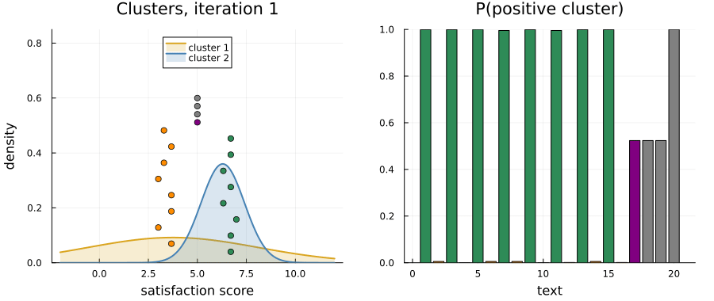

This example was automatically generated from a Jupyter notebook in the RxInferExamples.jl repository.
We welcome and encourage contributions! You can help by:
- Improving this example
- Creating new examples
- Reporting issues or bugs
- Suggesting enhancements
Visit our GitHub repository to get started. Together we can make RxInfer.jl even better! 💪
Sentiment Clustering with a Custom Text Node
This example clusters short product reviews by their sentiment. What makes it interesting is what we observe: not numbers, but the raw text of each review. We will build a small custom factor node that reads a piece of text and turns it into a probability distribution over a latent satisfaction score, and then place that node inside an ordinary Bayesian mixture model.
Along the way you will see:
- what RxInfer does under the hood, in plain words: factor graphs and message passing;
- that an observation in RxInfer can be anything, here a
String, as long as some rule knows how to turn it into a message; - how to define a custom node, its message update rule and its average energy (needed for the free energy);
- how a Gaussian mixture with a Beta mixing proportion separates positive from negative reviews, and what it does with texts that are not reviews at all.
Everything runs locally: the "text model" is a transparent word list written in this notebook, with no network and no external service.
using RxInfer, Plots
What is RxInfer? (The gentle introduction)
RxInfer is a Julia package for Bayesian inference (we use the word inference to mean Bayesian inference: computing posterior distributions, not the forward pass of a neural network). It takes a rather unusual approach: instead of treating your probabilistic model as one big mathematical beast that has to be tamed with MCMC or a global optimiser, it breaks everything down into small, local conversations between probability distributions.
Imagine your model as a social network in which probability distributions are people, each telling their neighbours what they think the unknown quantities might be. RxInfer organises this gossip into an efficient message-passing protocol on something called a factor graph.
Factor graphs: the social network of probability
A factor graph is a visual way to represent how the parts of your probabilistic model talk to each other:
- Variables: the things you want to learn about, or the things you observe
- Factors: the relationships between variables, such as a prior or a likelihood
- Edges: the communication channels along which probability distributions flow as "messages"
For example, if you want to model coin flips:
In this graph:
- Blue squares are variables (things we want to learn about)
- Orange squares are factors (probability distributions or relationships)
- Lines are the communication channels where messages flow back and forth
The magic happens when messages flow along these edges, updating beliefs as new information comes in.
The philosophy: local conversations, global answers
Instead of solving your entire model in one giant computation, RxInfer breaks it down into local conversations. Each node only needs to:
- Listen to the messages from its neighbours
- Update its local beliefs
- Send updated messages to its neighbours
Repeat this, and the whole network settles on the exact posterior distributions, or on an approximation of them. This approach has some nice properties:
- Modular: you can swap one part of a model without touching the others
- Efficient: each computation is small and local, so large models stay tractable
- Interpretable: you can inspect what each part of the model "thinks"
- Extensible: you can add new kinds of nodes, as we will do in this example
RxInfer doesn't care what you pass
RxInfer was designed to pass probability distributions along the edges of a factor graph. But the engine itself does not care what the observations are. For every node it only needs to know how to:
- compute an outgoing message from the incoming messages and marginals (a message update rule),
- optionally, combine them into a local belief (a marginal rule), and
- optionally, evaluate the node's contribution to the free energy (an average energy).
As long as you can write these, you can plug in anything as a node: a matrix multiplication, a nonlinear function, a neural network (see the other examples in this repository) or, as here, a function that reads text. The observed value itself can be any Julia object; the observed text simply arrives at our node as a point mass, PointMass{String}.
The problem: clustering reviews by sentiment
Our dataset is 17 short reviews of a (made-up) espresso machine, the Aurora, and three sentences that have nothing to do with it:
reviews = [
"Absolutely love this machine, the espresso is rich and delicious every morning.",
"Terrible machine. It leaked water all over my counter after a week.",
"Great build quality and the steam wand works perfectly. Highly recommend it.",
"The pump is loud and the coffee tastes bitter and burnt. Disappointed.",
"Easy to clean, quiet and fast. Excellent value for the price.",
"Broke after two months and support never replied. Avoid it.",
"The coffee tastes amazing and setup took five minutes. Very happy with it.",
"Awful design, and cleaning the drip tray is a nightmare.",
"Reliable and beautiful. It makes a fantastic cappuccino.",
"Overpriced, flimsy and slow. I regret buying it.",
"Best purchase I made this year, my mornings are wonderful now.",
"The espresso is weak and watery, a complete waste of money.",
"Simple controls, consistent shots and friendly customer support. Impressive.",
"I wanted to like it, but it is not good and the milk frother is useless.",
"Good machine, nice crema, and not expensive at all.",
"Constant error messages and a cheap plastic feel. Very poor quality.",
"Lovely design, but the coffee tastes bitter.",
]
unrelated = [
"I prefer apples over oranges.",
"The train to the city leaves at nine every morning.",
"My cat sleeps on the windowsill most afternoons.",
]
texts = [reviews; unrelated]
length(texts)
20What we would like to get out of it:
- Two sentiment clusters: the happy and the unhappy customers, without telling the model which review is which.
- Uncertainty: how sure are we about each review's cluster? The review "Lovely design, but the coffee tastes bitter." is mixed, and the last three texts are not reviews at all.
- A principled model: every step is ordinary probability, so the result comes with a free energy that we can use to compare solutions.
A clustering algorithm such as k-means would give hard assignments. We want probabilistic clustering with uncertainty.
A transparent text "sensor"
To connect text to numbers, we need a model of how a text relates to the writer's satisfaction. Here we write the simplest one we can explain in full: a word list (a sentiment lexicon). Every word is lower-cased; a word in the positive list counts as positive, a word in the negative list as negative, and a sentiment word right after a negation such as not or doesn't flips its polarity, so that "not good" is negative and "not expensive" positive.
const POSITIVE_WORDS = Set([
"love", "loved", "great", "excellent", "amazing", "fantastic", "wonderful", "delicious",
"perfect", "perfectly", "happy", "reliable", "beautiful", "best", "easy", "quiet", "fast",
"impressive", "recommend", "lovely", "good", "nice", "rich", "consistent", "friendly",
"superb", "smooth", "sturdy", "enjoy", "pleased", "solid", "brilliant", "awesome", "worth",
])
const NEGATIVE_WORDS = Set([
"terrible", "awful", "horrible", "bad", "poor", "broke", "broken", "leaked", "leaks", "loud",
"bitter", "burnt", "disappointed", "disappointing", "avoid", "nightmare", "overpriced",
"flimsy", "slow", "regret", "weak", "watery", "waste", "useless", "cheap", "error", "errors",
"hate", "worst", "noisy", "expensive", "difficult", "annoying", "faulty",
])
const NEGATIONS = Set(["not", "no", "never", "don't", "doesn't", "isn't", "wasn't", "didn't", "can't", "won't"])
tokenize(text) = split(lowercase(text), r"[^a-z']+"; keepempty = false)
# The positive and the negative sentiment words of a text, a negated word with its negation
function sentiment_words(text)
words = tokenize(text)
positive, negative = String[], String[]
for (i, word) in enumerate(words)
polarity = word in POSITIVE_WORDS ? 1 : word in NEGATIVE_WORDS ? -1 : 0
polarity == 0 && continue
negated = i > 1 && words[i - 1] in NEGATIONS
label = negated ? string(words[i - 1], " ", word) : String(word)
push!((negated ? -polarity : polarity) > 0 ? positive : negative, label)
end
return positive, negative
end
sentiment_words("Good machine, nice crema, and not expensive at all.")
(["good", "nice", "not expensive"], String[])Counting words is not yet a probability distribution. We turn the words into a likelihood for a latent satisfaction score $y$ on a 0–10 scale with one simple, explicit assumption: each sentiment word is a noisy vote about $y$. A positive word votes $r = 9$, a negative word votes $r = 1$, and each vote is a Gaussian measurement of the score with standard deviation $\sigma = 2$. Each text also carries one very weak vote for the neutral middle, $5$, with standard deviation $10$, so that a text without any sentiment word still gives a proper distribution. For a text $c$ with votes $r_1, \dots, r_n$ this is
\[\begin{aligned} f(c, y) = \mathcal{N}(5 \mid y, 10^2)\prod_{j=1}^{n}\mathcal{N}(r_j \mid y, \sigma^2). \end{aligned}\]
As a function of $y$ it is a Gaussian, with precision and mean
\[\begin{aligned} \frac{1}{v_c} = \frac{1}{10^2} + \frac{n}{\sigma^2}, \qquad \mu_c = v_c\left(\frac{5}{10^2} + \frac{1}{\sigma^2}\sum_{j=1}^{n} r_j\right). \end{aligned}\]
This gives the behaviour we want, and nothing is hidden:
- the mean follows the balance of positive and negative words;
- the variance shrinks with the number of sentiment words: a review full of opinions is a clearer signal than a review with one;
- a text with no sentiment words gives $\mathcal{N}(5, 10^2)$, a nearly flat message over the 0–10 scale: "this text tells me nothing about satisfaction". That is how the model can recognise an unrelated text.
This is a likelihood we chose. The numbers $9$, $1$, $\sigma = 2$ and the neutral vote are modelling decisions, written down as constants below, and you are encouraged to change them.
const POSITIVE_VOTE = 9.0 # where a positive word places the score
const NEGATIVE_VOTE = 1.0 # where a negative word places the score
const VOTE_VARIANCE = 4.0 # each vote is a Gaussian measurement with standard deviation 2
const NEUTRAL_VOTE = 5.0 # one weak vote for the middle of the scale ...
const NEUTRAL_VARIANCE = 100.0 # ... with standard deviation 10
function sentiment_votes(text)
positive, negative = sentiment_words(text)
return [fill(POSITIVE_VOTE, length(positive)); fill(NEGATIVE_VOTE, length(negative))]
end
# The Gaussian over the score that the votes of a text add up to
function sentiment_message(text)
votes = sentiment_votes(text)
precision = 1 / NEUTRAL_VARIANCE + length(votes) / VOTE_VARIANCE
weighted_mean = NEUTRAL_VOTE / NEUTRAL_VARIANCE + sum(votes; init = 0.0) / VOTE_VARIANCE
return NormalMeanVariance(weighted_mean / precision, 1 / precision)
end
shorten(text, n = 48) = length(text) <= n ? text : first(text, n - 1) * "…"
for text in texts
message = sentiment_message(text)
println(rpad(shorten(text), 50), "score ≈ ", round(mean(message); digits = 1), " ± ", round(std(message); digits = 1))
end
Absolutely love this machine, the espresso is r… score ≈ 8.9 ± 1.1
Terrible machine. It leaked water all over my c… score ≈ 1.1 ± 1.4
Great build quality and the steam wand works pe… score ≈ 8.9 ± 1.1
The pump is loud and the coffee tastes bitter a… score ≈ 1.0 ± 1.0
Easy to clean, quiet and fast. Excellent value … score ≈ 9.0 ± 1.0
Broke after two months and support never replie… score ≈ 1.1 ± 1.4
The coffee tastes amazing and setup took five m… score ≈ 8.9 ± 1.4
Awful design, and cleaning the drip tray is a n… score ≈ 1.1 ± 1.4
Reliable and beautiful. It makes a fantastic ca… score ≈ 8.9 ± 1.1
Overpriced, flimsy and slow. I regret buying it. score ≈ 1.0 ± 1.0
Best purchase I made this year, my mornings are… score ≈ 8.9 ± 1.4
The espresso is weak and watery, a complete was… score ≈ 1.1 ± 1.1
Simple controls, consistent shots and friendly … score ≈ 8.9 ± 1.1
I wanted to like it, but it is not good and the… score ≈ 1.1 ± 1.4
Good machine, nice crema, and not expensive at … score ≈ 8.9 ± 1.1
Constant error messages and a cheap plastic fee… score ≈ 1.1 ± 1.1
Lovely design, but the coffee tastes bitter. score ≈ 5.0 ± 1.4
I prefer apples over oranges. score ≈ 5.0 ± 10.0
The train to the city leaves at nine every morn… score ≈ 5.0 ± 10.0
My cat sleeps on the windowsill most afternoons. score ≈ 5.0 ± 10.0The clear reviews land near $1$ or near $9$ with a spread of one to one and a half points, the mixed review sits in the middle, and the three unrelated sentences say "anywhere between −5 and 15". The sensor on its own does not cluster anything: it does not know that there are two groups of customers, nor where they lie. That is the job of the probabilistic model.
Creating the custom node
To use the sensor inside a model, we wrap it in a factor node. Creating a custom node takes up to four steps:
- Declare the node with the
@define_factor_nodemacro - Define its message update rules with the
@define_message_update_rulemacro - Define its marginal rules with the
@define_marginal_update_rulemacro (not needed here) - Define its average energy with the
@define_average_energymacro, so that RxInfer can compute the free energy
The node
Our node, TextSentiment, has two interfaces (edges): out, the observed text, and score, the latent satisfaction score. A node is named by a Julia type; an empty struct is enough.
"""
TextSentiment
The likelihood of a text given a latent satisfaction score on a 0–10 scale, built from the
text's sentiment words (see `sentiment_message`).
# Interfaces
- `out`: the observed text, a `PointMass{String}`
- `score`: the latent satisfaction score
"""
struct TextSentiment end
@define_factor_node(node = TextSentiment, type = Stochastic, interfaces = [:out, :score])
The message update rule
A rule says how to compute the message a node sends along one of its edges, here score, from what it knows about the others. args names the inputs the rule takes: q[:out] is the marginal of the out edge, and since the text is observed, that marginal is a point mass at the text, PointMass{<:AbstractString}. Dispatch on this type is what lets RxInfer find our rule when a string arrives. The body receives the inputs as args, reads the text with args.q[:out].point and returns the Gaussian of the previous section.
The rule is a pure, deterministic function of its input: the same text always gives the same message. That is what a rule should be.
@define_message_update_rule(
node = TextSentiment, target = :score,
args = (q[:out]::PointMass{<:AbstractString},),
body = (args) -> sentiment_message(args.q[:out].point),
)
We only need a rule towards score. A rule towards out would describe generating text from a score, which we never do: the text is always observed.
You can call a rule by hand, outside of any model, which is handy for testing it. @call_message_update_rule returns a summary of the call, and getresult takes the message out of it:
message = getresult(@call_message_update_rule(
node = TextSentiment, target = :score,
q = (out = PointMass("Great coffee, but a terrible pump."),),
))
ExponentialFamily.NormalMeanVariance{Float64}(μ=5.0, v=1.9607843137254901)One positive and one negative word: the score is in the middle of the scale, with the spread of two votes.
The average energy
The free energy, which variational inference minimises, needs each node's average energy: the expected negative log of its factor under the current beliefs. For our factor $f(c, y)$ from above and a belief $q(y)$ with mean $m$ and variance $s$, each vote contributes a Gaussian term:
\[\begin{aligned} U = -\mathbb{E}_{q(y)}\left[\log f(c, y)\right] = \sum_{(r, \tau^2)} \frac{1}{2}\left(\log(2\pi\tau^2) + \frac{s + (m - r)^2}{\tau^2}\right), \end{aligned}\]
where the sum runs over the votes of the text, each $(r_j, \sigma^2)$, and the neutral vote $(5, 10^2)$. Note that $f$ is a density over the votes, not over the text itself: the free energy is therefore defined up to a constant that depends only on the observed texts, which is all we need to compare solutions on the same data.
@define_average_energy(
node = TextSentiment,
args = (q[:out]::PointMass{<:AbstractString}, q[:score]::Any),
body = (args) -> begin
m, s = mean(args.q[:score]), var(args.q[:score])
energy(r, τ²) = (log(2π * τ²) + (s + abs2(m - r)) / τ²) / 2
votes = sentiment_votes(args.q[:out].point)
energy(NEUTRAL_VOTE, NEUTRAL_VARIANCE) + sum(r -> energy(r, VOTE_VARIANCE), votes; init = 0.0)
end,
)
The model
Now the probabilistic model. We assume that the customers come in two groups, unhappy and happy, and that each text $c_i$ was written by someone from one of them:
\[\begin{aligned} s &\sim \mathrm{Beta}(1, 1), \\ m_k &\sim \mathcal{N}(5, 5^2), \quad w_k \sim \mathrm{Gamma}(2, 2), \quad k = 1, 2, \\ z_i &\sim \mathrm{Bernoulli}(s), \\ y_i &\sim \mathcal{N}(m_{z_i}, w_{z_i}^{-1}), \\ c_i &\sim \mathrm{TextSentiment}(y_i). \end{aligned}\]
\[s\]
is the proportion of texts in the second cluster; $\mathrm{Beta}(1, 1)$ says that any proportion is equally plausible a priori.\[m_k\]
is the typical score of cluster $k$. The prior $\mathcal{N}(5, 5^2)$ is the same for both clusters and covers the whole 0–10 scale: we do not tell the model which cluster is the negative one or where it lies.\[w_k\]
is the precision of cluster $k$, how tightly its scores gather around $m_k$. $\mathrm{Gamma}(\text{shape} = 2, \text{rate} = 2)$ has mean $1$, a cluster about one point wide, but it is broad: precisions from about $0.1$ to $3$, widths from about half a point to three points, are all plausible. On a 0–10 scale that is a mild, sensible assumption, and it keeps the precisions away from zero in the first iterations. The same clusters come out with the very vague $\mathrm{Gamma}(0.01, 0.01)$, as the robustness checks below show.\[z_i\]
is the cluster of text $i$, $y_i$ its latent score, and our custom node connects $y_i$ to the observed text.
In RxInfer, the cluster assignment and the Gaussian are one node, NormalMixture:
@model function sentiment_mixture(c)
s ~ Beta(1.0, 1.0)
m[1] ~ NormalMeanVariance(5.0, 25.0)
w[1] ~ GammaShapeRate(2.0, 2.0)
m[2] ~ NormalMeanVariance(5.0, 25.0)
w[2] ~ GammaShapeRate(2.0, 2.0)
for i in eachindex(c)
z[i] ~ Bernoulli(s)
y[i] ~ NormalMixture(switch = z[i], m = m, p = w)
c[i] ~ TextSentiment(score = y[i])
end
end
Inference
The mixture is solved with variational message passing under a mean-field assumption: the posterior is approximated by a product of independent factors, $q(s)\,q(m)\,q(w)\,q(z)\,q(y)$ (this is what constraints = MeanField() says, and what NormalMixture requires). Each factor is updated in turn from the current values of the others, for a number of iterations.
Because the updates depend on each other in a loop, some of them need a starting value. The choice matters for mixtures, so here is what we start from and why:
\[q(z_i) = (0.5, 0.5)\]
: every text is equally likely to be in either cluster, so the first update of the scores $y_i$ comes straight from what the texts say;\[q(m) = \mathcal{N}(3, 5^2), \mathcal{N}(7, 5^2)\]
: two slightly different, very uncertain starting points. They only break the symmetry between the two clusters, which are otherwise interchangeable; they are not a claim about where the clusters are;\[q(w)\]
and $q(s)$ start at their priors.
initialization = @initialization begin
q(s) = Beta(1.0, 1.0)
q(m) = [NormalMeanVariance(3.0, 25.0), NormalMeanVariance(7.0, 25.0)]
q(w) = [GammaShapeRate(2.0, 2.0), GammaShapeRate(2.0, 2.0)]
q(z) = Categorical([0.5, 0.5])
end
n_iterations = 20
result = infer(
model = sentiment_mixture(),
constraints = MeanField(),
# Observations are usually numbers; a `String` is wrapped in a `PointMass` explicitly,
# which is the form our rule expects
data = (c = map(PointMass, texts),),
initialization = initialization,
iterations = n_iterations,
free_energy = true,
)
Inference results:
Posteriors | available for (m, w, s, y, z)
Free Energy: | [213.7, 185.93, 188.902, 185.408, 180.235, 174.893, 17
1.295, 168.344, 167.038, 166.847, 166.776, 166.746, 166.733, 166.727, 166.7
24, 166.723, 166.722, 166.722, 166.722, 166.722]Watching the clusters form
The animation shows each iteration. On the left are the two clusters, $\mathcal{N}(m_k, 1/w_k)$ at the posterior means of $m_k$ and $w_k$, and every text as a dot at the posterior mean of its score, one row per text. On the right is the probability that each text belongs to the cluster that ends up on the positive side. The colours mark what we know and the model does not: positive reviews in green, negative ones in orange, the mixed review in purple and the unrelated sentences in grey.
# A Categorical over the two components; the Bernoulli switch selects the second for z = 1
p_second(q_z) = probvec(q_z)[2]
positive_cluster = argmax(mean.(result.posteriors[:m][end]))
p_positive(q_z) = positive_cluster == 2 ? p_second(q_z) : 1 - p_second(q_z)
# What each text is, for the colours only: the model never sees this
colors = [[isodd(i) ? :seagreen : :darkorange for i in 1:16]; :purple; fill(:gray, length(unrelated))]
animation = @animate for iteration in 1:n_iterations
ms = mean.(result.posteriors[:m][iteration])
ws = mean.(result.posteriors[:w][iteration])
x = range(-2, 12; length = 400)
left = plot(title = "Clusters, iteration $iteration", xlabel = "satisfaction score", ylabel = "density", ylims = (0, 0.85), legend = :top)
for (k, color) in zip(1:2, (:goldenrod, :steelblue))
plot!(left, x, pdf.(Normal(ms[k], sqrt(1 / ws[k])), x); fillrange = 0, fillalpha = 0.2, linewidth = 2, color = color, label = "cluster $k")
end
scores = mean.(result.posteriors[:y][iteration])
scatter!(left, scores, range(0.04, 0.6; length = length(texts)); color = colors, markersize = 4, label = false)
probabilities = p_positive.(result.posteriors[:z][iteration])
right = bar(probabilities; color = colors, ylims = (0, 1), legend = false, title = "P(positive cluster)", xlabel = "text")
plot(left, right; size = (900, 380), margin = 4Plots.mm)
end
gif(animation, "sentiment_clustering.gif"; fps = 2, show_msg = false);

The free energy is the quantity this procedure minimises. It drops quickly and is flat after about ten iterations; it is not monotone in the very first steps, because the starting values are not a consistent belief yet:
plot(result.free_energy; xlabel = "iteration", ylabel = "free energy", label = false, marker = :circle, size = (600, 300))

Results
The two clusters the model found, with the posterior of the mixing proportion:
for k in 1:2
m, w = result.posteriors[:m][end][k], result.posteriors[:w][end][k]
println("cluster $k: centre ", round(mean(m); digits = 2), " ± ", round(std(m); digits = 2), ", width ≈ ", round(sqrt(1 / mean(w)); digits = 2))
end
println("proportion in cluster 2: ", round(mean(result.posteriors[:s][end]); digits = 2))
cluster 1: centre 1.1 ± 0.3, width ≈ 0.84
cluster 2: centre 8.52 ± 0.26, width ≈ 0.92
proportion in cluster 2: 0.59One cluster sits near $1$ and the other near $9$: the unhappy and the happy customers, found without telling the model which is which. Here is every text with its posterior: the probability of the positive cluster, $q(z_i)$, and the latent score, $q(y_i)$.
function show_table(result, texts)
println(rpad("text", 50), rpad("P(positive)", 13), "score")
for (text, q_z, q_y) in zip(texts, result.posteriors[:z][end], result.posteriors[:y][end])
println(rpad(shorten(text), 50), rpad(round(p_positive(q_z); digits = 2), 13), round(mean(q_y); digits = 1), " ± ", round(std(q_y); digits = 1))
end
end
show_table(result, texts)
text P(positive) score
Absolutely love this machine, the espresso is r… 1.0 8.7 ± 0.7
Terrible machine. It leaked water all over my c… 0.0 1.1 ± 0.7
Great build quality and the steam wand works pe… 1.0 8.7 ± 0.7
The pump is loud and the coffee tastes bitter a… 0.0 1.1 ± 0.6
Easy to clean, quiet and fast. Excellent value … 1.0 8.7 ± 0.7
Broke after two months and support never replie… 0.0 1.1 ± 0.7
The coffee tastes amazing and setup took five m… 1.0 8.6 ± 0.8
Awful design, and cleaning the drip tray is a n… 0.0 1.1 ± 0.7
Reliable and beautiful. It makes a fantastic ca… 1.0 8.7 ± 0.7
Overpriced, flimsy and slow. I regret buying it. 0.0 1.1 ± 0.6
Best purchase I made this year, my mornings are… 1.0 8.6 ± 0.8
The espresso is weak and watery, a complete was… 0.0 1.1 ± 0.7
Simple controls, consistent shots and friendly … 1.0 8.7 ± 0.7
I wanted to like it, but it is not good and the… 0.0 1.1 ± 0.7
Good machine, nice crema, and not expensive at … 1.0 8.7 ± 0.7
Constant error messages and a cheap plastic fee… 0.0 1.1 ± 0.7
Lovely design, but the coffee tastes bitter. 1.0 7.5 ± 0.8
I prefer apples over oranges. 1.0 8.5 ± 0.9
The train to the city leaves at nine every morn… 1.0 8.5 ± 0.9
My cat sleeps on the windowsill most afternoons. 1.0 8.5 ± 0.9The sixteen clear reviews are separated with certainty, and their latent scores are a little sharper than the sensor's readings alone: each review's score has borrowed strength from the other reviews in its cluster.
The mixed review and the three unrelated sentences deserve a closer look. The table puts all of them in a cluster with certainty, and gives the unrelated sentences a score as precise as a real review's. That is not what their texts say: the unrelated sentences carry no information about satisfaction at all. The cause is the mean-field approximation, not the data. Under $q(z_i)\,q(y_i)$, a text's cluster and its score must be described independently. For a text that does not pin its own score down, the best such description puts the score inside one cluster and the text firmly in that cluster, rather than "either cluster, with a score in either place", which a product of independent factors cannot express. Variational inference is known to prefer one mode like this.
What the model really believes about such a text is easy to compute once the clusters are learned. Integrating the score out of the mixture and the sensor's Gaussian message $\mathcal{N}(y_i \mid \mu_i, v_i)$ gives
\[\begin{aligned} p(z_i = k \mid c_i) \propto \pi_k \int \mathcal{N}(y \mid m_k, w_k^{-1})\,\mathcal{N}(y \mid \mu_i, v_i)\,\mathrm{d}y = \pi_k\,\mathcal{N}(\mu_i \mid m_k, w_k^{-1} + v_i), \end{aligned}\]
with $\pi = (1 - s, s)$. We plug in the posterior means of $s$, $m_k$ and $w_k$, which ignores their (small) remaining uncertainty:
function p_positive_integrated(result, text)
s = mean(result.posteriors[:s][end])
ms = mean.(result.posteriors[:m][end])
ws = mean.(result.posteriors[:w][end])
message = sentiment_message(text)
logweights = [log(π) + logpdf(Normal(m, sqrt(1 / w + var(message))), mean(message)) for (π, m, w) in zip((1 - s, s), ms, ws)]
weights = exp.(logweights .- maximum(logweights))
return weights[positive_cluster] / sum(weights)
end
println(rpad("text", 50), rpad("mean-field", 13), "integrated")
for (text, q_z) in zip(texts, result.posteriors[:z][end])
println(rpad(shorten(text), 50), rpad(round(p_positive(q_z); digits = 2), 13), round(p_positive_integrated(result, text); digits = 2))
end
text mean-field integrated
Absolutely love this machine, the espresso is r… 1.0 1.0
Terrible machine. It leaked water all over my c… 0.0 0.0
Great build quality and the steam wand works pe… 1.0 1.0
The pump is loud and the coffee tastes bitter a… 0.0 0.0
Easy to clean, quiet and fast. Excellent value … 1.0 1.0
Broke after two months and support never replie… 0.0 0.0
The coffee tastes amazing and setup took five m… 1.0 1.0
Awful design, and cleaning the drip tray is a n… 0.0 0.0
Reliable and beautiful. It makes a fantastic ca… 1.0 1.0
Overpriced, flimsy and slow. I regret buying it. 0.0 0.0
Best purchase I made this year, my mornings are… 1.0 1.0
The espresso is weak and watery, a complete was… 0.0 0.0
Simple controls, consistent shots and friendly … 1.0 1.0
I wanted to like it, but it is not good and the… 0.0 0.0
Good machine, nice crema, and not expensive at … 1.0 1.0
Constant error messages and a cheap plastic fee… 0.0 0.0
Lovely design, but the coffee tastes bitter. 1.0 0.73
I prefer apples over oranges. 1.0 0.59
The train to the city leaves at nine every morn… 1.0 0.59
My cat sleeps on the windowsill most afternoons. 1.0 0.59For the clear reviews the two columns agree. For the unrelated sentences, the probability with the score integrated out is simply the mixing proportion: a text that says nothing about satisfaction is assigned to a cluster as often as that cluster occurs, which is exactly the right answer. The mixed review is in between as well. So the model does recognise unrelated text, through the sensor's flat message; to read that off, look at the integrated probability or at the spread of the sensor's message, not at the mean-field $q(z_i)$ of such a text.
How robust is this?
A mixture model has several local optima, and variational inference finds one of them. We rerun the inference with other orderings of the texts, other starting points and a vaguer prior on the precisions, and check that the sixteen clear reviews are always split the same way. The free energy tells the solutions of one model apart: lower is better. (The run with the vaguer prior is a different model, so its free energy is not comparable with the others'.)
clear_positive = reviews[1:2:16]
clear_negative = reviews[2:2:16]
# The same model, with the prior on the precisions as a parameter
@model function sentiment_mixture_variant(c, w_prior)
s ~ Beta(1.0, 1.0)
m[1] ~ NormalMeanVariance(5.0, 25.0)
w[1] ~ GammaShapeRate(w_prior...)
m[2] ~ NormalMeanVariance(5.0, 25.0)
w[2] ~ GammaShapeRate(w_prior...)
for i in eachindex(c)
z[i] ~ Bernoulli(s)
y[i] ~ NormalMixture(switch = z[i], m = m, p = w)
c[i] ~ TextSentiment(score = y[i])
end
end
function run_variant(texts; m_start = (3.0, 7.0), w_prior = (2.0, 2.0), scores_start_at_5 = false)
initialization = if scores_start_at_5
# every score starts at the same place, instead of every text starting undecided
@initialization begin
q(s) = Beta(1.0, 1.0)
q(m) = [NormalMeanVariance(m_start[1], 25.0), NormalMeanVariance(m_start[2], 25.0)]
q(w) = [GammaShapeRate(w_prior...), GammaShapeRate(w_prior...)]
q(y) = NormalMeanVariance(5.0, 100.0)
end
else
@initialization begin
q(s) = Beta(1.0, 1.0)
q(m) = [NormalMeanVariance(m_start[1], 25.0), NormalMeanVariance(m_start[2], 25.0)]
q(w) = [GammaShapeRate(w_prior...), GammaShapeRate(w_prior...)]
q(z) = Categorical([0.5, 0.5])
end
end
return infer(
model = sentiment_mixture_variant(w_prior = w_prior),
constraints = MeanField(),
data = (c = map(PointMass, texts),),
initialization = initialization,
iterations = n_iterations,
free_energy = true,
)
end
function summarise(label, texts, result)
hi = argmax(mean.(result.posteriors[:m][end]))
p(q_z) = hi == 2 ? probvec(q_z)[2] : probvec(q_z)[1]
probability = Dict(zip(texts, p.(result.posteriors[:z][end])))
separated = all(probability[t] > 0.99 for t in clear_positive) && all(probability[t] < 0.01 for t in clear_negative)
centres = round.(sort(mean.(result.posteriors[:m][end])); digits = 1)
println(rpad(label, 25), rpad(separated, 11), rpad(centres, 14), round(result.free_energy[end]; digits = 1))
end
println(rpad("run", 25), rpad("separated", 11), rpad("centres", 14), "free energy")
summarise("as above", texts, result)
summarise("texts reversed", reverse(texts), run_variant(reverse(texts)))
summarise("unrelated first", [unrelated; reviews], run_variant([unrelated; reviews]))
summarise("negatives first", [reviews[2:2:16]; reviews[1:2:17]; unrelated], run_variant([reviews[2:2:16]; reviews[1:2:17]; unrelated]))
summarise("start at 4.5 and 5.5", texts, run_variant(texts; m_start = (4.5, 5.5)))
summarise("start at 1 and 9", texts, run_variant(texts; m_start = (1.0, 9.0)))
summarise("start swapped, 7 and 3", texts, run_variant(texts; m_start = (7.0, 3.0)))
summarise("prior Gamma(0.01, 0.01)", texts, run_variant(texts; w_prior = (0.01, 0.01)))
summarise("every score starts at 5", texts, run_variant(texts; scores_start_at_5 = true))
run separated centres free energy
as above true [1.1, 8.5] 166.7
texts reversed true [1.1, 8.5] 166.7
unrelated first true [1.5, 8.9] 170.9
negatives first true [1.1, 8.5] 166.7
start at 4.5 and 5.5 true [1.5, 8.9] 170.9
start at 1 and 9 true [1.1, 8.5] 166.7
start swapped, 7 and 3 true [1.5, 8.9] 166.7
prior Gamma(0.01, 0.01) true [1.5, 8.8] 178.0
every score starts at 5 false [5.0, 5.0] 254.6The clear reviews are split the same way in every run that starts from undecided assignments, whatever the order of the texts, the starting points of the cluster centres (swapping them only swaps the clusters' labels) or the prior on the precisions. The free energies differ slightly between these runs because the mixed review and the unrelated sentences, which the mean-field approximation must place in one cluster, end up in different ones; the integrated probabilities above are the honest answer for them.
The last run shows the trap to avoid. If every score $y_i$ starts at the same value, all texts look identical in the first update, they are all sent to the same cluster, and the inference never recovers: one broad cluster holds everything. Its free energy is much higher than the two-cluster solution's, so it is a poor local optimum, not a better explanation of the data. Starting from undecided assignments lets the texts speak first. Watching the free energy is how you would notice such a problem in a model of your own.
Plugging in a better text model
The word list is deliberately simple: it ignores sarcasm, negations further than one word back and every word that is not in its lists. The nice thing about the factor-graph view is that nothing else in the model depends on how the text is read. To use a better text model, only the rule changes. For example, with any function that maps a text to a mean and a variance (a classifier on top of a sentence embedding, a fine-tuned sentiment model, or a large language model asked for a score and its uncertainty), the rule would be:
@define_message_update_rule(
node = TextSentiment, target = :score,
args = (q[:out]::PointMass{<:AbstractString},),
body = (args) -> begin
μ, v = my_text_model(args.q[:out].point) # any text model of your choice
NormalMeanVariance(μ, v)
end,
)
The mixture, the priors and the inference stay exactly as they are. What changes is how much you can trust the likelihood: our lexicon's variance follows from an explicit assumption about votes, while a learned model's stated uncertainty should be checked (calibrated) before it is treated as a likelihood. A rule that calls an external service is no longer a pure function of its input, which you should declare with pure = false in @define_message_update_rule.
Summary
- An observation in RxInfer can be any Julia object; here each review arrives at its node as a
PointMass{String}. - A custom node,
TextSentiment, with one message update rule turns a text into a Gaussian likelihood for a latent score, and an average energy makes the free energy available. - An ordinary Gaussian mixture with a Beta mixing proportion then separates the happy from the unhappy customers, without being told which is which.
- A text without sentiment words produces a nearly flat message. The mean-field approximation still has to place such a text in one cluster, but integrating its score out shows the model's real belief: either cluster, as often as each occurs.
- Starting values matter for mixtures; the free energy tells good solutions from poor ones.
This example was automatically generated from a Jupyter notebook in the RxInferExamples.jl repository.
We welcome and encourage contributions! You can help by:
- Improving this example
- Creating new examples
- Reporting issues or bugs
- Suggesting enhancements
Visit our GitHub repository to get started. Together we can make RxInfer.jl even better! 💪
This example was executed in a clean, isolated environment. Below are the exact package versions used:
For reproducibility:
- Use the same package versions when running locally
- Report any issues with package compatibility
Status `/tmp/jl_LCtdtQ/Project.toml`
[91a5bcdd] Plots v1.41.7
[86711068] RxInfer v6.1.1